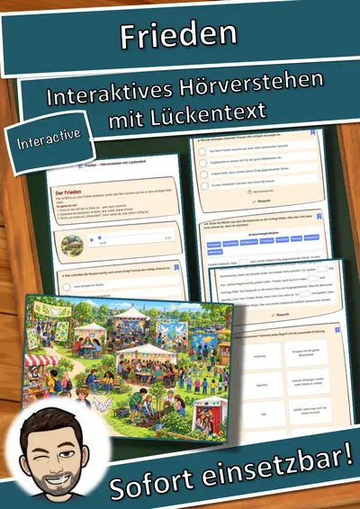

Lesespur: Sich für den Frieden einsetzen – Lesespurgeschichte mit Rätseln (Klasse 9)
Sich für den Frieden einsetzen – Lesespurgeschichte Ethik (Klasse 9)Begib dich mit deiner Klasse auf eine spannende Lesespur über Friedensethik! Sophie und Elias helfen bei einem Aktionstag „Zusammen für den Frieden" mit – vom Treffpunkt über den Schlichterstand, das Musikzelt, die Kunstwand, die Weltkarte, das Begegnungszelt, die Friedensbank und die Baumaktion bis zum Friedenskreis. An jeder Station erleben sie, wie man zum Frieden beiträgt: Streit gewaltfrei schlichten, gemeinsam singen, ein Zeichen malen, weltweite Konflikte verstehen, sich begegnen, sich versöhnen, einen Baum für die Zukunft pflanzen und am Ende einen großen Kreis bilden. Ihr kleiner Papierkranich Kimi ist immer dabei. Am Ende jedes Abschnitts verrät ein Hinweis den nächsten Ort auf dem Aktions-Plan – nur wer richtig liest und mitdenkt, findet den Weg und sammelt alle geheimen Buchstaben zum Lösungswort.
Die perfekte Lesespur für den ETHIKUNTERRICHT der Sekundarstufe I: Sie verbindet motivierendes, sinnentnehmendes Lesen mit wertvollen Gesprächsanlässen über Frieden, gewaltfreie Konfliktlösung und Zusammenhalt – und schult zugleich das genaue Arbeiten. Das Material ist SOFORT EINSETZBAR und in DREI DIFFERENZIERUNGSSTUFEN (leicht ★ / mittel ★★ / schwer ★★★) angelegt, sodass alle Jugendlichen einer Klasse am selben Thema arbeiten können. Neutral und wertorientiert gehalten.WICHTIG: Das komplette Material ist sowohl in FARBE als auch in SCHWARZ-WEISS enthalten – ideal zum Sparen von Druckkosten.DAS IST ENTHALTEN
- Lesespurgeschichte in 3 Niveaus (leicht, mittel, schwer)
- farbiger Aktions-Plan als Suchkarte
- Hörverstehen mit QR-Code zur MP3 (selbstständiges Hören mit Kopfhörern)
- vier Aufträge auf dem Weg: ein Zuordnungs-Rätsel, ein Quiz, eine Rechenaufgabe und ein Steckbrief
- Rätselseite (Wörter-Suchsel + Wissensfragen)
- Ausmalbild zum Thema
- ausführliches Lösungsblatt für die Lehrkraft
- alles zusätzlich als komplette Schwarz-Weiß-VarianteSO FUNKTIONIERT DIE LESESPURDie Jugendlichen lesen ab START, entnehmen dem Text einen Hinweis auf einen Ort des Aktionstags, suchen ihn auf dem Plan und lesen bei dieser Station weiter. An jeder richtigen Station gibt es einen Sammelbuchstaben. Eingebaute Sackgassen (Imbiss, Parkplatz, Kasse, Fotobox) gehören zwar zum Fest, sind aber keine Stationen der Spur und dienen der Selbstkontrolle. Am Ende werden die gesammelten Buchstaben umgestellt und ergeben ein geheimes Lösungswort. (Die Lösungen sind selbstverständlich nur im Lösungsblatt für die Lehrkraft enthalten.)INHALTLICHER SCHWERPUNKTFrieden ist nicht selbstverständlich – er muss immer wieder neu erarbeitet werden. Und er beginnt nicht irgendwo weit weg, sondern im Kleinen, im Alltag jedes Einzelnen. Wer einen Streit gewaltfrei schlichtet, beiden Seiten zuhört und einen Kompromiss sucht, trägt dazu bei. Wer sich versöhnt, statt auf seinem Recht zu beharren, zeigt Stärke. Wer Menschen anderer Herkunft kennenlernt, baut Vorurteile ab, und daraus wächst Zusammenhalt. Gewalt dagegen verschärft einen Streit nur. So erkennen die Jugendlichen, dass schon kleine Schritte zählen und dass jeder Verantwortung für ein friedliches Miteinander trägt. Das Material lädt dazu ein, über gewaltfreie Konfliktlösung nachzudenken und selbst aktiv zu werden.ABGEDECKTER LEHRPLAN (Klasse 9, Ethik)
- Ethik (LehrplanPLUS Bayern) – „Sich für den Frieden einsetzen" (Realschule Klasse 9) bzw. „Friedensethik" (Gymnasium Klasse 9, sinngemäß auch Mittelschule): erkennen, dass Frieden nicht selbstverständlich ist, gewaltfreie Wege der Konfliktlösung kennenlernen und über eigene Möglichkeiten nachdenken, sich für den Frieden einzusetzen.
- Deutsch – Lesen mit Texten und Medien umgehen: Lesestrategien anwenden, Texten gezielt Informationen entnehmen, sinnentnehmend und selektiv lesen; Zuhören: einem Sachhörtext konzentriert folgen (Hörverstehen mit MP3).
- Mathematik – Rechnen im Sachzusammenhang.
- Fächerübergreifend / Kompetenzen: Konfliktfähigkeit, Perspektivübernahme, Verantwortungsbewusstsein, genaues Lesen und Prüfen, Konzentration und Ausdauer, kreatives Gestalten (Ausmalbild).
Geeignet für Freiarbeit, Stationenlernen, Vertretungsstunden, Wochenplan, den Baustein Friedenserziehung/Soziales Lernen und Homeschooling. Klassenstufe 9 (differenziert einsetzbar auch in angrenzenden Jahrgangsstufen).
Ähnliche Materialien

Lesespur: Streit schlichten: wir finden eine Lösung – Lesespurgeschichte mit Rätseln (Klasse 3)

Frieden – Hörverstehen mit Lückentext (interaktiv)

Frieden Lückentext mit Wortspeicher Hörverstehen und Suchsel

04-06 Internationaler Tag des Sports für Entwicklung und Frieden

Lesespur: Streit und Konflikte fair lösen – Lesespurgeschichte mit Rätseln (Klasse 7)

Lesespur: Sich für andere einsetzen – Lesespurgeschichte mit Rätseln (Klasse 8)

Westfälischer Friede Lückentext mit Wortspeicher Hörverstehen und Suchsel